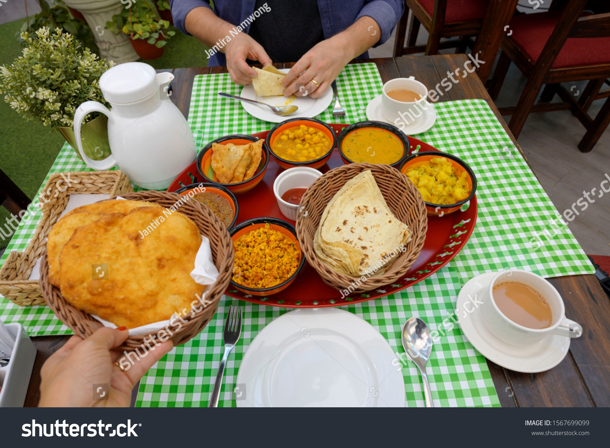
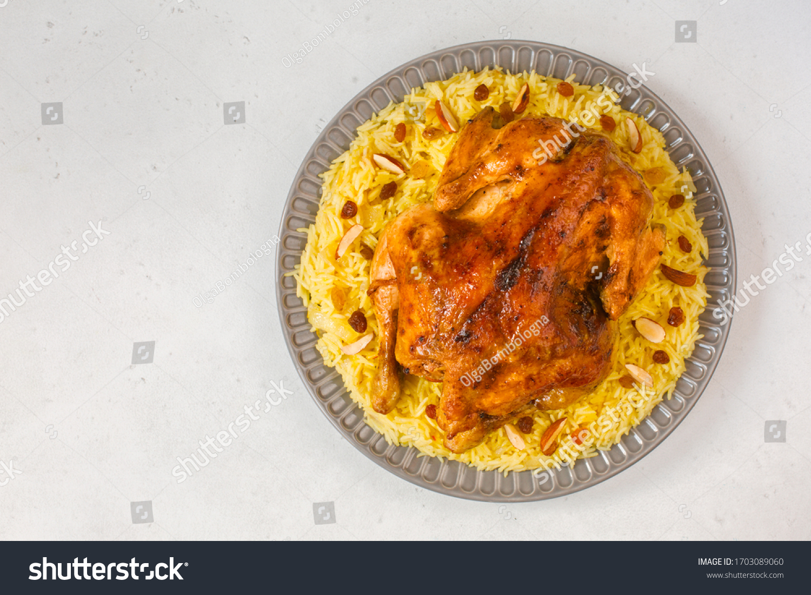

| Home | | | Intro | | | Culture | | | Food | | | Contact me | | |
Some of the things in food will also have a link with culture as Bahrainis are very keen in maintaining their culture. Breakfast, arguably one of the most important meals of the day. Bahrainis usually eat a buffet style breakfast where they would make lots of food and the whole family takes what they want to eat (I will put an example of what I mean below). In Bahraini most families will eat their meals together and especially breakfast, for example our family have a specific day where we cook a big breakfast an eat as a family. 
I would say lunch would be the second most important meal to a bahraini as it is also a big meal. From my experience lunch in Bahrain is very similar but different, let me explain. Bahraini lunches consists of a rice and a protein. For example
and the list continues there is so much you can do with the rice and protein by using different herbs and flavours making it a whole unique meal. As i said it is similar but different.
Finally dinner, the reason I would say that it is the least important out the other 2 would be because when Bahrainis eat dinner I mostly is leftovers from lunch or they would eat something like they did during breakfast but on a smaller scale. But I do say mostly because some families like to go out during dinner to a restaurant or do something fancy as a family. You can see that family is a recurring theme when comes to food, because family is very important to bahrainis you will see that more in culture